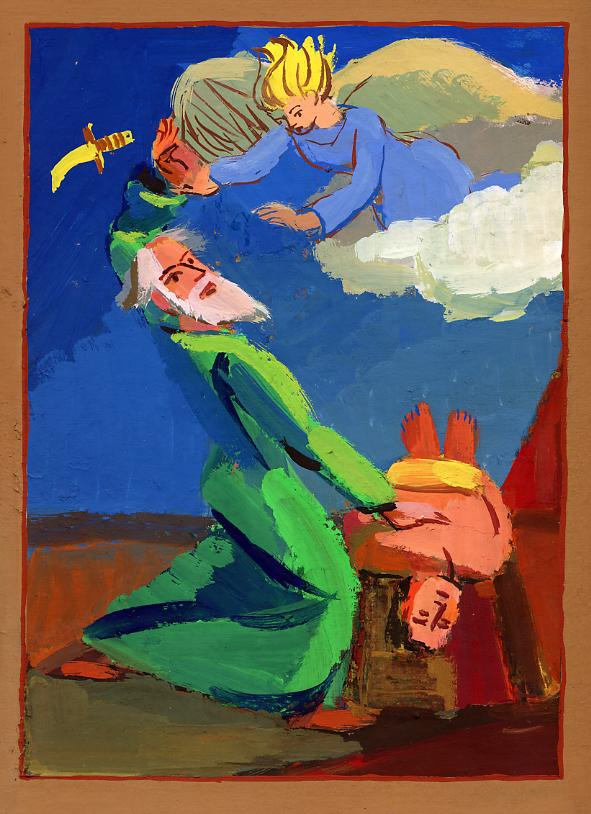
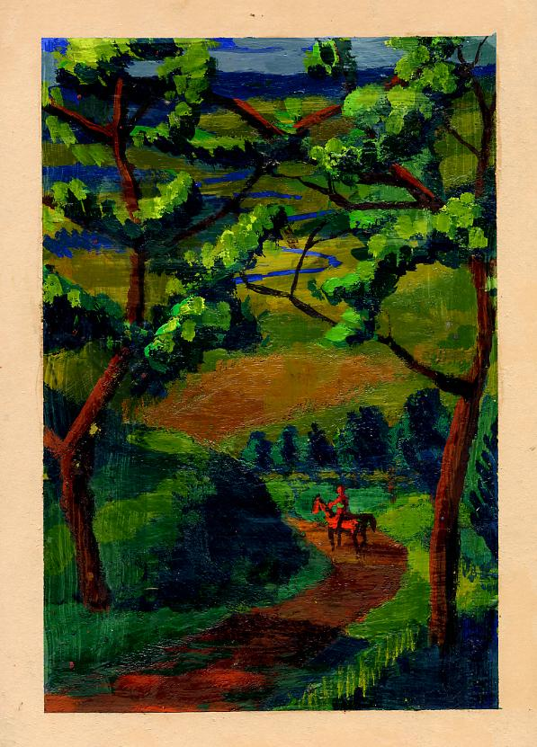
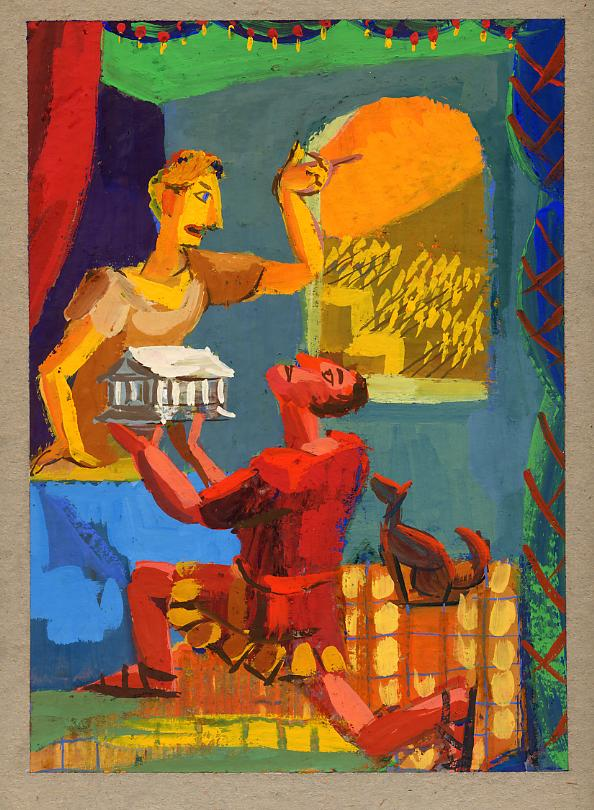
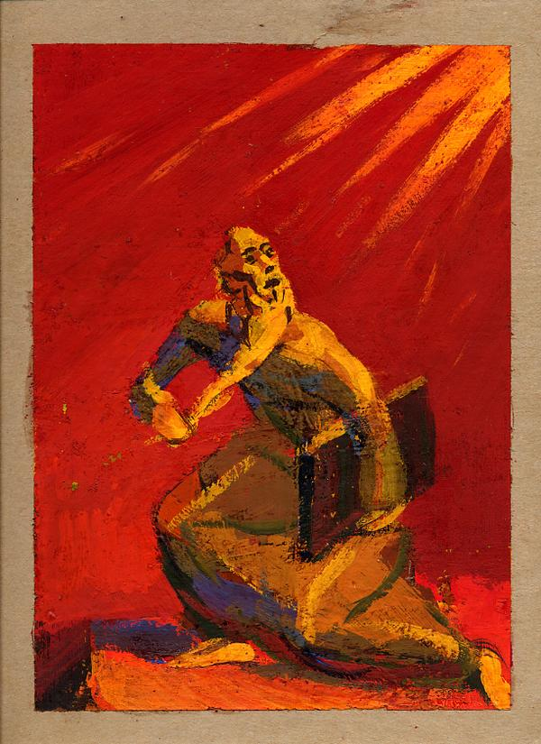
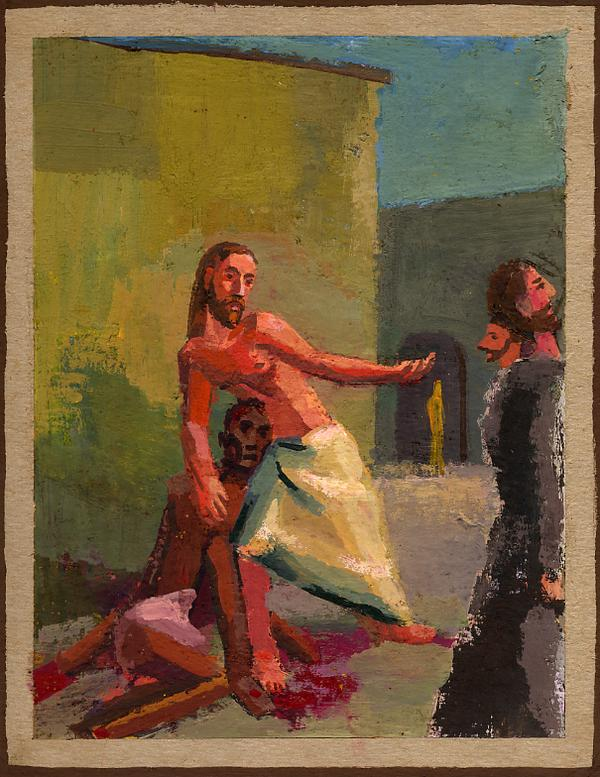

Illustrated History
My senior year at the University of Oregon a visiting professor looked at my painting and asked what I wanted to do. I said, “History painting.” The art department in the 90s was like experiential art history, learning to do what artists centuries ago had accomplished. I lived Impressionism. It was like acting the part of an artist, packing my easel and going out to the field. Then I got into Cubism. And the Romantics, their grand canvases. But I had come to school wanting to be a comic book artist, and that strand wove itself into the picture.

A short time after the visiting professor left, a job opened at the Center for Electronic Studying. They were looking for someone who could illustrate a grade school history book that would be formatted as a CD-ROM. I told my cousin, “The job is mine.” He might’ve thought I was overconfident—I compensated for insecurity with arrogance, but honestly, I wasn’t that confident that I could paint. I’d begun with lines! Comic books were all about lines. My teachers opened up three-dimensional representation. Thinking about the figure in the round, drawing something so a sculptor could make a statue from how the lines described the form. The path in the distance is unseen when a man sets out (I think the character in the picture below was one of the apostles, but it’s been years).

They hired me, and I made digital pictures with a basic paint program, zooming in to place pixels. The experience of being able to quickly change colors digitally was a revelation because with paint each decision of which color to use got expensive (oil paint) and to make big changes the paint had to be scraped off the surface. My painting professor was old school, his idol was the 18th century still-life painter Chardin, and when he visited me at the Center for Electronic Studying to see the pictures I’d made with the computer, he was very generous when he said it was like placing tile, creating mosaics with colored tiles, like the Romans. After the staff got to know me and saw I could make the pictures, they were kind enough to grant me a wish; I asked if I could make them with paint and scan them in.

All told there were more than forty images created, I have floppy disks and haven’t opened them in years. The software? Can the images be opened? I’ll try, but there’s so much to do now. Who knows when I’ll get to it, but at some point I would like to display them. This picture of Moses I remember it was one I was most proud of because I wanted to create calligraphic brush strokes, where the mark defined a form while still being a mark.

Painting a picture to represent Jesus, drew on some cubism, symbolism. The picture can express it without my explaining what I was trying to do, but in the art historical model, forgive me as I explain this picture. The figure standing in sunlight, in the background, a dash of gold paint, is a fish held by Jesus, a fisher of men, the two passing men pushed to the edge of the picture, their form mirrors the shape of the fish. Jesus calls out to men in the marketplace to have compassion for the suffering of the slave..

In the 00s a friend scanned my paintings and I put my best on MySpace. But that platform no longer displays the slideshow. Perhaps digital technology is not the the best archive. It may be reproduction and repetition that preserves the past.